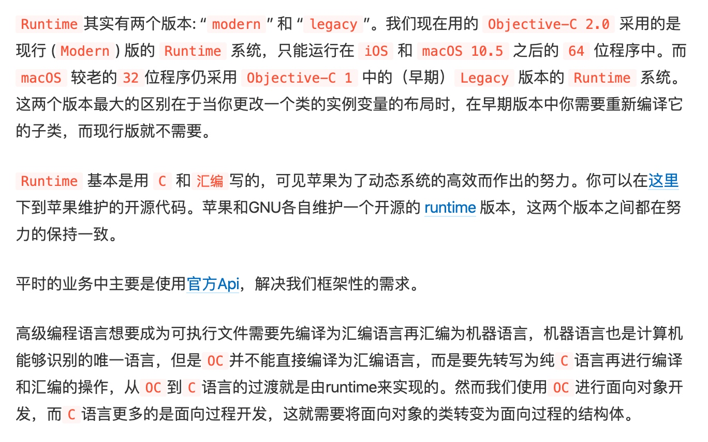
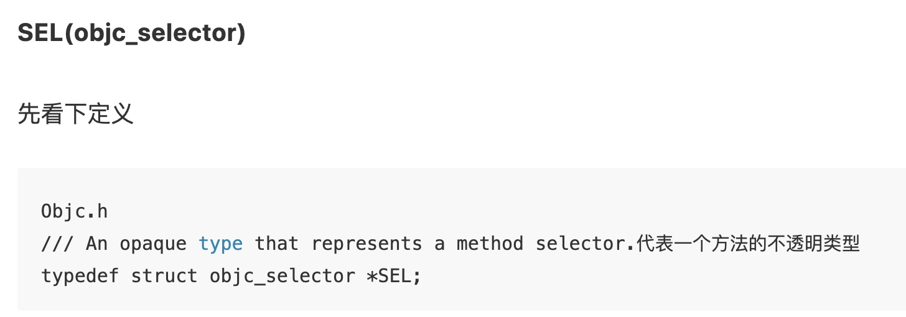
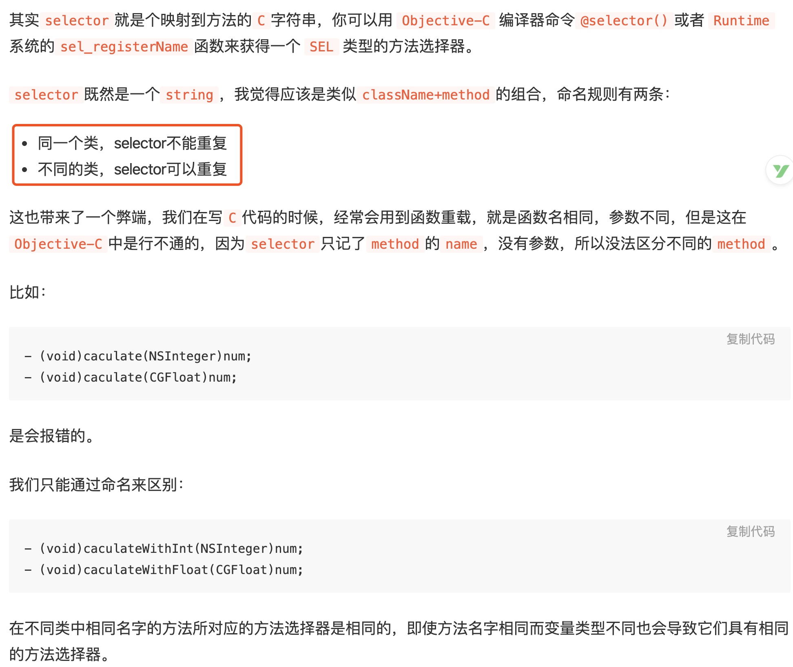
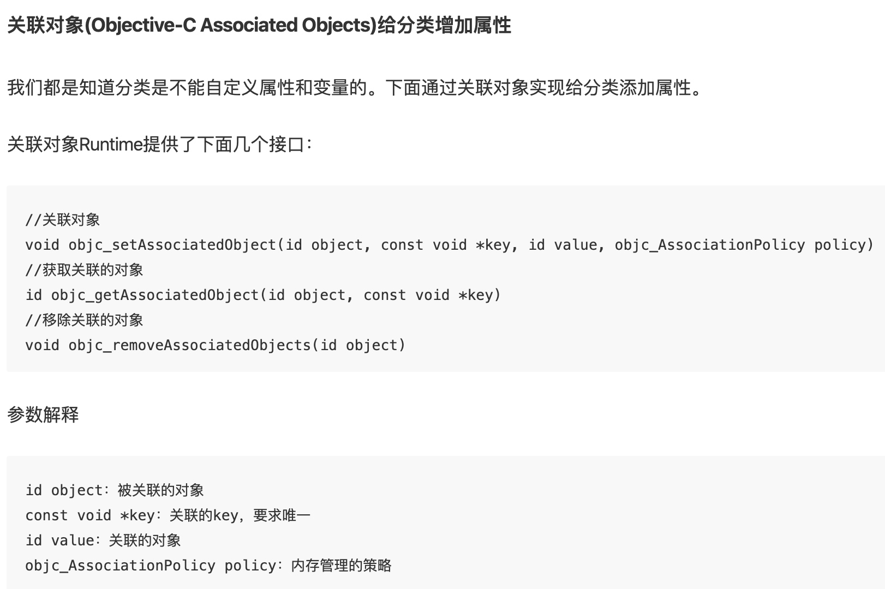
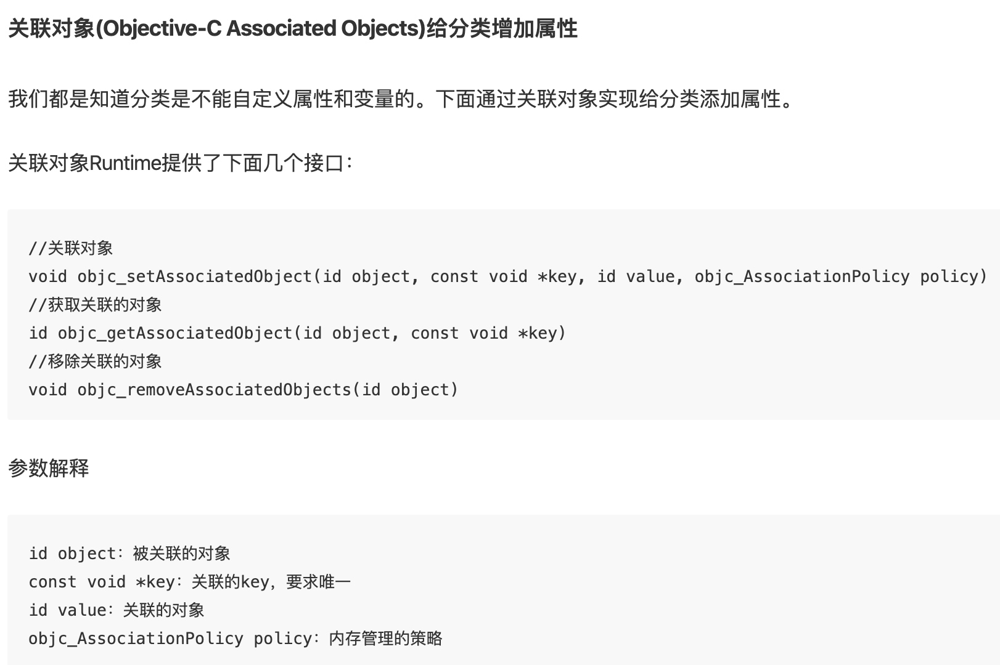
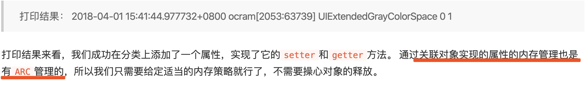

Runtime

Runtime 的特性主要是消息（方法）传递，如果消息（方法）在对象中找不到，就会进行消息转发。
Runtime 介绍
Objective-C 拓展了 C语言，并且加入了面向对象特性和 SmallTalk 式的消息传递机制，而这个拓展的核心就是用 C 和编译语言写的Runtime库。Runtime是面向对象的基础。

Runtime 消息传递
一个对象的方法[obj foo]，编译器转成消息转发：objc_msgSend(obj, foo)
Runtime 执行的流程如下：
- 首先通过 obj 的 isa 指针， 找到他的 Class
- 在 class 的 methodlist（方法列表） 列表中找方法： foo
- 如果 class 中没有找到 foo，就向上去父类的方法列表中继续查找；
- 如果找到了就执行，去实现 IMP。


- 系统首先找到消息的接收对象,然后通过对象的 isa 找到他的类 class.
- 然后在他的类中查找 method_list,是否有 selector 方法
- 没有找到则继续查找父类的 method_list.
- 找到对应的 method,执行他的 IMP
- 转发 IMP 的 return 值.
下面讲一下消息传递中用到的概念:
- 类对象(objc_class)
- 实例对象(objc_object)
- 元类(Meta Class)
- Method(objc_method)
- SEL(objc_selector)
- IMP
- 类缓存(objc_cache)
- Category(objc_category)
类对象(objc_class)
在 OC 中类是有 Class 类型表示的,它实际上是一个指向 objc_class 的结构体指针


struct objc_class结构体定义了很多变量，通过命名不难发现，
结构体里保存了指向父类的指针、类的名字、版本、实例大小、实例变量列表、方法列表、缓存、遵守的协议列表等，
一个类包含的信息也不就正是这些吗？没错，类对象就是一个结构体struct objc_class，这个结构体存放的数据称为元数据(metadata)，
该结构体的第一个成员变量也是isa指针，这就说明了Class本身其实也是一个对象，因此我们称之为类对象，类对象在编译期产生用于创建实例对象，是单例。
实例(objc_object)

类对象中的元数据存储的都是如何创建一个实例相关的信息,那么类对象和类方法应该从哪里创建呢? 就是 isa 指针指向的结构体创建,类对象的 isa 指针指向的我们称为元类,元类中保存了创建类对象及类方法所需的所有信息,所以经典的那张图又来了:

元类(Meta Class)
通过上图我们可以发现整个体系构成了一个自闭环, struct objc_object 的结构体实例, 它的 isa 指向类对象,类对象的 isa 指向元类,super_class 指针指向父类的类对象,而元类的 super_class 的指针指向了父类的元类,那元类的指针又指向了自己.
元类是一个类对象的类,在上面我们提到所有的类自身也是一个对象,我们可以像这个对象发送消息(调用方法),为了调用类方法,这个类的 isa 指针必须指向一个包含这些类方法的一个 objc_class 结构体,这就引出了元类(meta-class)的概念.
元类中保存了创建类对象以及类方法所需的所有信息。 任何NSObject继承体系下的meta-class都使用NSObject的meta-class作为自己的所属类，而基类的meta-class的isa指针是指向它自己。

- SEL method_name 方法名
- char *method_types 方法类型
- IMP method_imp 方法实现

objc_msgSend 函数第二个参数类型为 SEL.它是 selector 在 OC 中的表示类型(Swift 中是 Selector 类).selector 是方法选择器,可以理解为区分方法的 ID,而这个 ID 的数据结构是 SEL.



- name:是指 class_name 而不是 category_name。
- cls:要扩展的类对象，编译期间是不会定义的，而是在Runtime阶段通过name对 应到对应的类对象。
- instanceMethods：category中所有给类添加的实例方法的列表。
- classMethods：category中所有添加的类方法的列表。
- protocols：category实现的所有协议的列表。
- instanceProperties：表示Category里所有的properties，这就是我们可以通过objc_setAssociatedObject和objc_getAssociatedObject增加实例变量的原因，不过这个和一般的实例变量是不一样的。

Runtime 消息转发
消息转发的最后三次机会
- 动态方法解析
- 备用接受者
- 完整消息转发

动态方法解析

可以看到虽然没有实现foo:这个函数，但是我们通过class_addMethod动态添加fooMethod函数，并执行fooMethod这个函数的IMP。从打印结果看，成功实现了。
如果resolve方法返回 NO ，运行时就会移到下一步：forwardingTargetForSelector。
备用接受者
如果目标对象实现了-forwardingTargetForSelector:，Runtime 这时就会调用这个方法，给你把这个消息转发给其他对象的机会。
实现一个备用接收者的例子如下：

可以看到我们通过forwardingTargetForSelector把当前ViewController的方法转发给了Person去执行了。打印结果也证明我们成功实现了转发。
完整消息转发
如果在上一步还不能处理未知消息，则唯一能做的就是启用完整的消息转发机制了。
首先它会发送-methodSignatureForSelector:消息获得函数的参数和返回值类型。如果-methodSignatureForSelector:返回nil ，Runtime则会发出 -doesNotRecognizeSelector: 消息，程序这时也就挂掉了。如果返回了一个函数签名，Runtime就会创建一个NSInvocation 对象并发送 -forwardInvocation:消息给目标对象。


从打印结果来看，我们实现了完整的转发。通过签名，Runtime生成了一个对象anInvocation，发送给了forwardInvocation，我们在forwardInvocation方法里面让Person对象去执行了foo函数。签名参数v@:怎么解释呢，这里苹果文档Type Encodings有详细的解释。
以上就是Runtime的三次转发流程。下面我们讲讲Runtime的实际应用。

Runtime 应用
- AOP 面向切片编程(埋点方面用的比较多)
 

下面实现一个UIView的Category添加自定义属性defaultColor。



注:weak 的关联内存管理策略是什么?
https://dayon.gitbooks.io/-ios/content/chapter8.html
方法添加

方法替换
下面实现一个替换ViewController的viewDidLoad方法的例子。

swizzling应该只在+load中完成。 在 Objective-C 的运行时中，每个类有两个方法都会自动调用。+load 是在一个类被初始装载时调用，+initialize 是在应用第一次调用该类的类方法或实例方法前调用的。两个方法都是可选的，并且只有在方法被实现的情况下才会被调用。
swizzling应该只在dispatch_once 中完成,由于swizzling 改变了全局的状态，所以我们需要确保每个预防措施在运行时都是可用的。原子操作就是这样一个用于确保代码只会被执行一次的预防措施，就算是在不同的线程中也能确保代码只执行一次。Grand Central Dispatch 的 dispatch_once满足了所需要的需求，并且应该被当做使用swizzling 的初始化单例方法的标准。
KVO实现


注:
消息转发中"v@:"含义:

参考：
https://juejin.im/post/5ac0a6116fb9a028de44d717
https://bujige.net/blog/iOS-Runtime-01.html
https://developer.apple.com/library/archive/documentation/Cocoa/Conceptual/ObjCRuntimeGuide/Articles/ocrtTypeEncodings.html#//apple_ref/doc/uid/TP40008048-CH100
https://www.jianshu.com/p/ab966e8a82e2